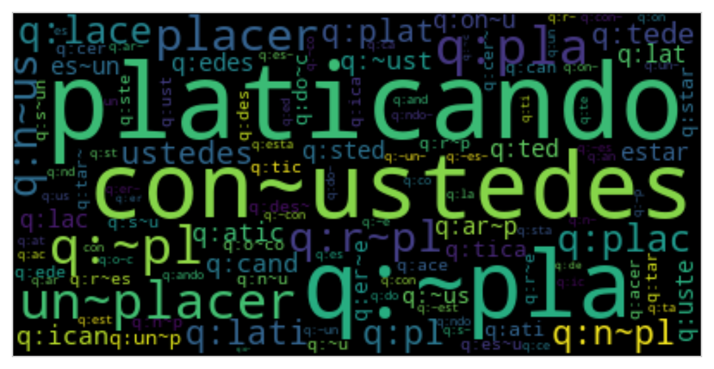
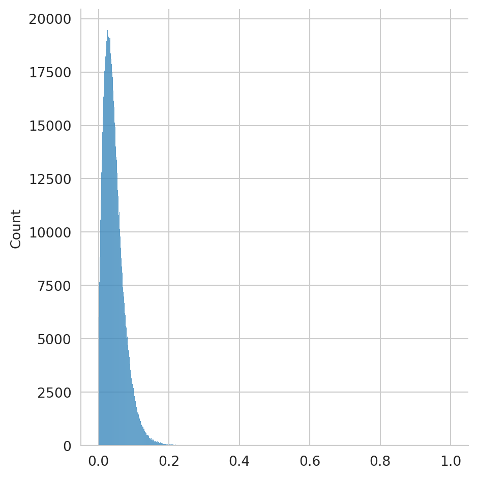
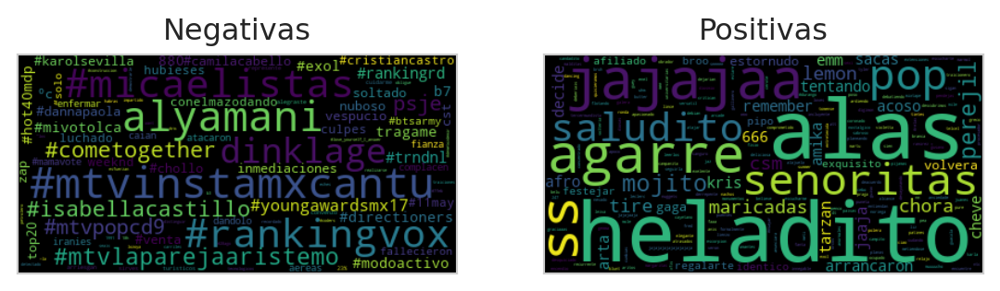
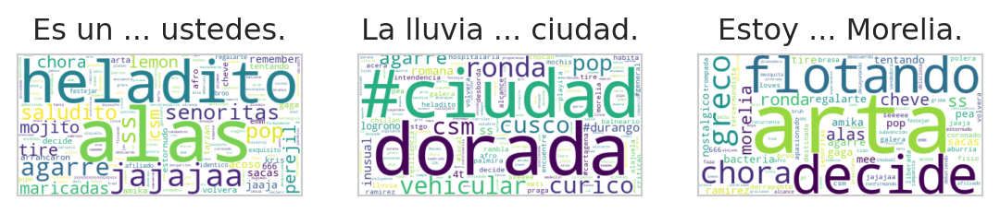
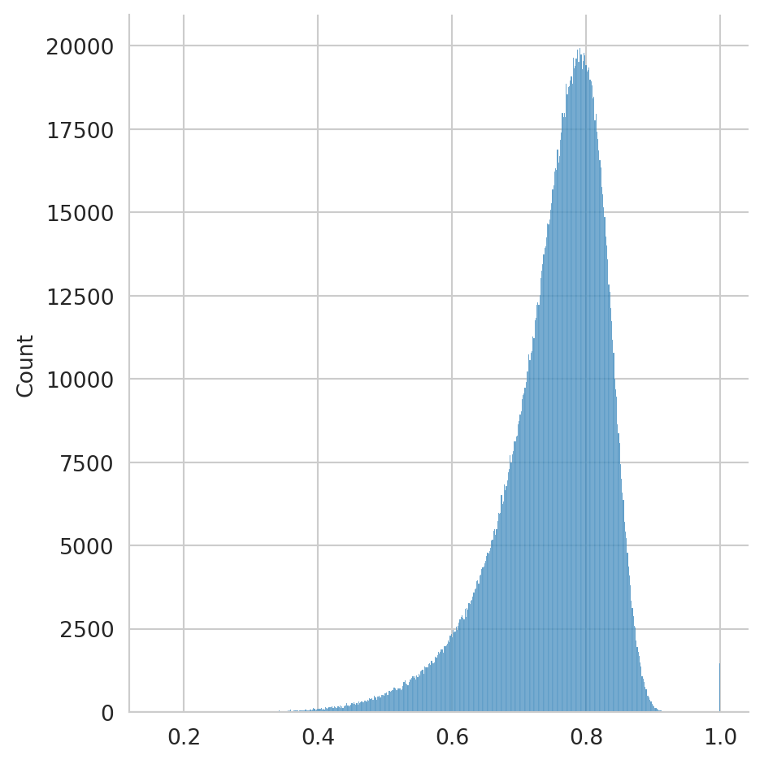
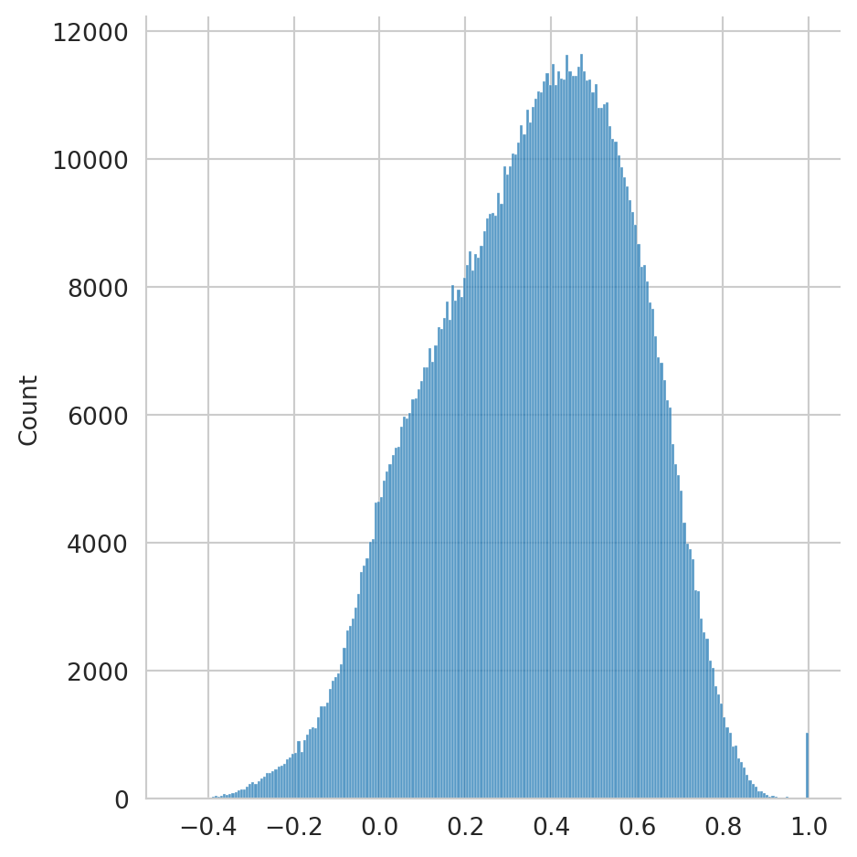
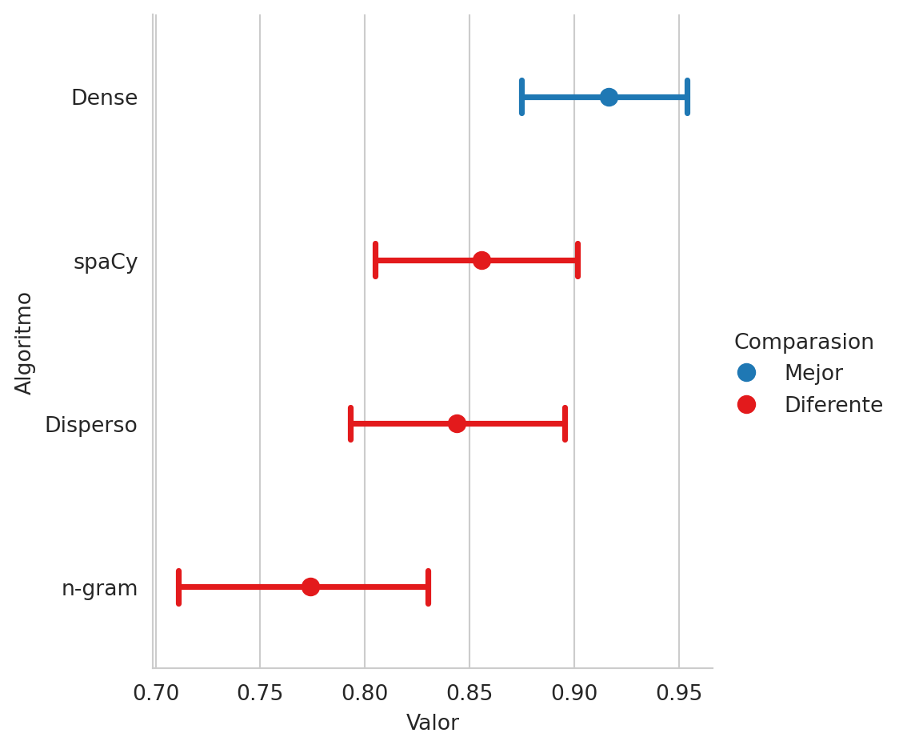

from os.path import isfile, isdir
from zipfile import ZipFile
from dataclasses import dataclass
from collections import Counter
from transformers import AutoTokenizer
import pprint
import numpy as np
from sklearn.svm import LinearSVC
from sklearn.pipeline import make_pipeline
import pandas as pd
from matplotlib import pylab as plt
import seaborn as sns
from CompStats.metrics import macro_recall
from wordcloud import WordCloud
import spacy
from microtc.utils import tweet_iterator
from encexp.utils import load_dataset, Download
from EvoMSA import BoWT, DenseBoWT
pp = pprint.PrettyPrinter(width=60, compact=True).pprint5 Representación Vectorial
El objetivo de la unidad es analizar diferentes representaciones de texto basadas en vectores.
Paquetes usados
5.1 Introducción
En el Capítulo 4 se describió un clasificador de texto que está basado en el modelo de lenguaje de gramas. Uno se podría imaginar que este clasificador representa de alguna manera al texto, es decir, que exite una estructura matemática donde los textos están representados. En este caso particular se observará que los textos están representados en un espacio vectorial. En los siguientes fragmentos de código se realizará una implementación equivalente que ayuda a visualizar esta representación.
Lo primer que se realiza es cargar el conjunto de datos que ha sido utilizado en el Capítulo 4 y crear un modelo de lenguaje (i.e., ModeloNGram Listado 3.5) de unigramas y sin \(k\)-suavizado.
dataset = load_dataset(lang='es', dataset='dev')
modelo = ModeloNGram(N=1, k_suavizado=0).fit(dataset)Los parametros se encuentran en las atributos modelo.frase y modelo.hist, en el caso de modelo.hist este tiene un valor de 3033366. Se observa que modelo.frase es un diccionario donde el índice es el identificador del segmento y el valor corresponde a la frecuencia. Por otro lado, el método modelo._log_prob (ver Listado 3.5) utiliza la información de modelo.frase y modelo.hist para calcular el logaritmo de la probabilidad.
El primer paso es representar la información de modelo.frase y modelo.hist en un vector. Lo primero es guardar, en la variable den, el logaritmo de modelo.hist, después es utilizar la variable idx para dar un orden al vocabulario, es decir, el primer elemento de idx corresponderá a la primera palabra del vocabulario y así sucesivamente. Utilizando idx se itera por todo el vocabulario y se guarda el logaritmo de la probabilidad para cada segmento en el arreglo pesos.
den = np.log(modelo.hist)
idx = sorted(modelo.frase.keys())
pesos = np.array(
[np.log(modelo.frase[k]) - den
for k in idx]
)- 1
-
Cálculo de Ecuación 3.2 donde \(w\) corresponde a
k
La variable pesos tiene un tamaño de 21859 que corresponde al tamaño del vocabulario. Para concluir el ejemplo, se va a calcular el logaritmo de observar la frase Buenos días. Lo primero que se tiene que realizar es conocer la posición de cada segmento (e.g., palabra) en el vector pesos esto se realiza con la asociación mostrada en idx2pos. Lo segundo es crear un vector de ceros (i.e., vec) que contendrá la frase segmentadas. El tercer paso es segmentar la frase, iterar por cada segmento y agregar uno en la posición que corresponde a cada segmento en vec. El resultado es que vec tiene codificada la frase tal y como la realiza ModeloNGram.
idx2pos = {k: v for v, k in enumerate(idx)}
vec = np.zeros(len(pesos))
for seg in modelo.segmentar('Buenos días'):
vec[idx2pos[f'{seg}']] += 1
TipActividad
Ejercicio 5.1 Indique los indices, en el vector pesos, correspondientes a la frase buen día
[9090, 720, 279, 19039][9090, 253, 279, 19039][9090, 403, 1158, 19039]
Con la información de vec y pesos se puede calcular el logaritmo de la probabilidad el cual corresponde al producto punto entre vec y pesos tal como se muestra en la siguiente instrucción.
f'{np.dot(vec, pesos):0.4f}''-23.0646'Se puede verificar que el valor de modelo._log_prob("Buenos días") corresponde a -23.0646, que es equivalente al encontrado por la representación alternativa.
Se observa que la variable vec y pesos se pueden considerar como vectores que están \(\mathbb R^d\) donde \(d\) tiene un valor de 21859; por otro lado, la frase Buenos días está codificada en vec, haciendo que esta este representada como un vector en \(\mathbb R.\)
5.2 Bolsa de Palabras Dispersa
La idea anterior es un ejemplo de una bolsa de palabras dispersa, donde cada término o segmento de palabra \(t\) está asociado a un vector único \(\mathbf{v_t} \in \mathbb R^d\) donde la \(i\)-ésima componente, i.e., \(\mathbf{v_t}_i\), es diferente de cero y \(\forall_{j \neq i} \mathbf{v_t}_j=0\). Es decir la \(i\)-ésima componente está asociada al término \(t\), se podría pensar que si el vocabulario está ordenado de alguna manera, entonces \(t\) está en la posición \(i\). Por otro lado el valor que contiene la componente se usa para representar alguna característica del término.
El conjunto de vectores \(\mathbf v\) corresponde al vocabulario, teniendo \(d\) diferentes token en el mismo y por definición \(\forall_{i \neq j} \mathbf{v_i} \cdot \mathbf{v_j} = 0\), donde \(\mathbf{v_i} \in \mathbb R^d\), \(\mathbf{v_j} \in \mathbb R^d\), y \((\cdot)\) es el producto punto. Cabe mencionar que cualquier segmento fuera del vocabulario es descartado.
Usando esta notación, un texto \(x\) está representado por una secuencia de términos, i.e., \((t_1, t_2, \ldots)\); la secuencia puede tener repeticiones es decir, \(t_j = t_k\). Utilizando la característica de que cada término está asociado a un vector \(\mathbf v\), se transforma la secuencia de términos a una secuencia de vectores (manteniendo las repeticiones), i.e., \((\mathbf{v_{t_1}}, \mathbf{v_{t_2}}, \ldots)\). Finalmente, el texto \(x\) se representa como:
\[ \mathbf x = \frac{\sum_t \mathbf{v_t}}{\lVert \sum_t \mathbf{v_t} \rVert}, \tag{5.1}\]
donde la suma se hace para todos los elementos de la secuencia, \(\mathbf x \in \mathbb R^d\), y \(\lVert \mathbf w \rVert\) es la norma Euclideana del vector \(\mathbf w\). Es importante notar que el denominador de Ecuación 5.1 es comunmente utilizado para mejorar el rendimiento de los clasificador basados en este tipo de representación; existiendo representaciones que no lo usan, como la vista revisada en la Sección 5.1.
Antes de iniciar la descripción detallada del proceso de representación utilizando una bolsa de palabras dispersas, es conveniente ilustrar este proceso mediante la Figura 5.1. El texto segmentado es el resultado del proceso ilustrado en Figura 2.1. El texto segmentado puede seguir dos caminos, en la parte superior se encuentra el caso cuando los pesos han sido identificados previamente y en la parte inferior es el procedimiento cuando los pesos se estiman mediante un corpus específico que normalmente es un conjunto de entrenamiento.
5.2.1 Pesado de Términos
Como se había mencionado el valor que tiene la componente \(i\)-ésima del vector \(\mathbf{v_t}_i\) corresponde a una característica del término asociado, este procedimiento se le conoce como el esquema de pesado. Por ejemplo, si el valor es \(1\) (i.e., \(\mathbf{v_{t_i}} = 1\)) entonces el valor está indicando solo la presencia del término, este es el caso más simple. Considerando la Ecuación 5.1 se observa que el resultado, \(\mathbf x\), cuenta las repeticiones de cada término, por esta característica a este esquema se le conoce como frecuencia de términos (term frequency (TF)). En el caso descrito en Sección 5.1 corresponde a la Ecuación 3.2 combinada con la frecuencia del término.
Una medida que complementa la información que tiene la frecuencia de términos es el inverso de la frecuencia del término (Inverse Document Frequency (IDF)) en la colección, esta medida propuesta por Sparck Jones (1972) se usa en un método de pesado descrito por Salton y Yang (1973) el cual es conocido como TFIDF. Este método de pesado propone el considerar el producto de la frecuencia del término y el inverso de la frecuencia del término (Inverse Document Frequency (IDF) ) en la colección como el peso del término.
5.2.2 Ejemplos
En los siguientes ejemplos se usa una bolsa de palabras con un pesado TFIDF pre-entrenada, los datos de esta bolsa de palabras se encuentra en el atributo BoW.bow. El tamaño del vocabulario es \(131072\), que está compuesto por palabras, gramas de palabras y caracteres. En el siguiente ejemplo se muestran los primeros tres gramas con sus respectivos valores TFIDF de la frase Buen día. Se puede observar que el tm regresa una lista de pares, donde la primera parte es el identificador del término, e.g., \(11219\) y el segundo es el valor TFIDF, e.g., \(0.3984\). La lista tiene un tamaño de \(27\) elementos, el resto de los \(131072\) componentes son cero dado que no se encuentran en el texto representado.
bow = BoWT(lang='es')
tm = bow.bow
vec = tm['Buen día']
vec[:3][(11219, np.float64(0.39843362852631786)),
(11018, np.float64(0.3245843730253676)),
(24409, np.float64(0.23778568902806235))]El uso del identificador del término se puede reemplazar por el término para poder visualizar mejor la representación del texto en el espacio vectorial. El diccionario que se encuentra en BoW.names hace la relación identificador a término. Se puede ver que el primer elemento del vector es el bigrama buen~dia, seguido por buen y el tercer término es dia. Los siguientes términos que no se muestran corresponden a gramas de caracteres. El valor TFIDF no indica la importancia del término, mientras mayor sea el valor, se considera más importante de acuerdo al TFIDF. En este ejemplo el bigrama tiene más importancia que las palabras y la palabra buen es más significativa que dia.
[(bow.names[k], v)
for k, v in vec[:3]][('buen~dia', np.float64(0.39843362852631786)),
('buen', np.float64(0.3245843730253676)),
('dia', np.float64(0.23778568902806235))]Con el objetivo de ilustrar una heurística que ha dado buenos resultados en el siguiente ejemplo se presentan las primeras cuatro componentes del texto Buen día colegas. Se puede observar como los valores de IDF de los términos comunes cambiaron, por ejemplo para el caso de buen~dia cambio de \(0.3984\) a \(0.2486\). Este es el resultado de que los valores están normalizados tal como se muestra en la Ecuación 5.1. Por otro lado, se observa que ahora el término más significativo es la palabra colegas.
txt = 'Buen día colegas'
[(bow.names[k], v)
for k, v in tm[txt][:4]][('buen~dia', np.float64(0.24862785236357487)),
('buen', np.float64(0.20254494048246244)),
('dia', np.float64(0.1483814139998851)),
('colegas', np.float64(0.3538047214393573))]Una manera de visualizar la representación es creando una nube de palabras de los términos, donde el tamaño del termino corresponde al valor TFIDF. En la Figura 5.2 muestra la nube de palabras generada con los términos y sus respectivos valores IDF del texto Es un placer estar platicando con ustedes.
Código
txt = 'Es un placer estar platicando con ustedes.'
tokens = {bow.names[id]: v for id, v in tm[txt]}
word_cloud = WordCloud(
background_color='white'
).generate_from_frequencies(tokens)
plt.imshow(word_cloud, interpolation='bilinear')
plt.grid(False)
plt.tick_params(left=False, right=False, labelleft=False,
labelbottom=False, bottom=False)
TipActividad
Ejercicio 5.2 Indicar de la frase Procesamiento de Lenguaje Natural* ¿cuál de los siguientes términos son los tres más importantes de acuerdo al pesado TFIDF?
['procesamiento', 'de', 'lenguaje']['de', 'lenguaje', 'natural']['procesamiento', 'lenguaje', 'q:guaj']
El texto se representa en un espacio vectorial, entonces es posible comparar la similitud entre dos textos en esta representación, por ejemplo, en el siguiente ejemplo se compara la similitud coseno entre los textos Es un placer estar platicando con ustedes. y La lluvia genera un caos en la ciudad. El valor obtenido es cercano a cero indicando que estos textos no son similares.
txt1 = 'Es un placer estar platicando con ustedes.'
txt2 = 'La lluvia genera un caos en la ciudad.'
vec1 = tm[txt1]
vec2 = tm[txt2]
f = {k: v for k, v in vec1}
np.sum([f[k] * v for k, v in vec2 if k in f])np.float64(0.016455192944786954)Complementando el ejemplo anterior, en esta ocasión se comparan dos textos que comparten el concepto plática, estos son Es un placer estar platicando con ustedes. y Estoy dando una platica en Morelia. se puede observar que estos textos son más similares que los ejemplos anteriores.
txt1 = 'Es un placer estar platicando con ustedes.'
txt2 = 'Estoy dando una platica en Morelia.'
vec1 = tm[txt1]
vec2 = tm[txt2]
f = {k: v for k, v in vec1}
np.sum([f[k] * v for k, v in vec2 if k in f])np.float64(0.2035427118119316)Habiendo realizado la similitud entre algunos textos lleva a preguntarse cómo será la distribución de similitud entre varios textos, para poder contestar esta pregunta, se utilizarán los primero 1024 datos del siguiente conjunto.
dataset = load_dataset(lang='es', dataset='dev')[:1024]El primer paso es representar todos los textos en el espacio vectorial de la bolsa de palabras, lo cual se logra con el método BoW.transform (primera linea), el segundo paso es calcular la similitud entre todos los textos, como se muestra en la segunda linea.
X = tm.transform(dataset)
sim = np.dot(X, X.T)La distribución de similitud se muestra en la Figura 5.3 se puede observar que las similitudes se encuentran concentradas cerca del cero, esto indica que la mayoría de los textos están distantes, esto es el resultado de la bolsa de palabras discreta que se enfoca en modelar las palabras y no el significado de las mismas.
Código
sns.displot(sim.data)
5.3 Bolsa de Palabras Densa
La Figura 5.4 muestra el procedimiento que se sigue para representar un texto en una bolsa de palabras dispersa. En primer lugar la bolsa de palabras densa considera que los vectores asociados a los términos se encuentra pre-entrenados y en general no es factible entrenarlos en el momento, esto por el tiempo que lleva estimar estos vectores.
En particular se describirán los vectores densos utilizados en Graff et al. (2020). El texto se representa como el vector \(\mathbf u\) que se calcula usando la Ecuación 5.2, donde se observa que es la suma de los vectores asociados a cada término más un coeficiente \(\mathbf{w_0}\). En particular el coeficiente \(\mathbf{w_0} \in \mathbb R^{M}\) no se encuentra en todas las representaciones densas y \(M\) es la dimensión de la representación densa.
\[ \mathbf u = \sum_t \mathbf{u_t} + \mathbf{w_0}. \tag{5.2}\]
El vector \(\mathbf {u_t}\) está asociado al término \(t\), en particular este vector está definido en términos de una bolsa de palabras dispersa (Ecuación 5.1) como se puede observar en la Ecuación 5.3
\[ \mathbf{u_t} = \frac{\mathbf W \mathbf {v_t}}{\lVert \sum_t \mathbf{v_t} \rVert}, \tag{5.3}\]
donde \(\mathbf W \in \mathbb R^{M \times d}\) es la matriz que hace la proyección de la representación dispersa a la representación densa, se puede observar esa operación está normalizada con la norma Euclideana de la representación dispersa.
Combinando las Ecuación 5.2 y Ecuación 5.3 queda
\[ \begin{split} \mathbf{u_t} &= \sum_t \frac{\mathbf W \mathbf {v_t}}{\lVert \sum_t \mathbf{v_t} \rVert} + \mathbf{w_0} \\ &= \mathbf W \frac{\sum_t \mathbf {v_t}}{\lVert \sum_t \mathbf{v_t} \rVert} + \mathbf{w_0}, \end{split} \]
donde se observa que la representación dispersa (Ecuación 5.1), i.e., \(\frac{\sum_t \mathbf {v_t}}{\lVert \sum_t \mathbf{v_t} \rVert}\), resulta en
\[ \mathbf u = \mathbf W \mathbf x + \mathbf{w_0}, \tag{5.4}\]
que representa un texto en el vector \(\mathbf u \in \mathbb R^M.\)
Para algunas representaciones densas, las componentes de la matriz de transformación \(\mathcal W\) están asociadas a conceptos, en el caso que se analiza estas están asociadas a palabras claves o emojis.
5.3.1 Ejemplos
Continuando con los ejemplos presentados para la bolsa dispersa (Sección 5.2.2) en esta sección se hace el análisis con la representación de palabras densa. El primer paso es inicializar la clase que contiene las representaciones densas, esto se hace con la siguiente instrucción.
dense = DenseBoWT(lang='es',
voc_size_exponent=15,
emoji=False, keyword=True,
distance_hyperplane=True,
dataset=False)Para representar un texto en el espacio vectorial denso se utiliza el método transform, por ejemplo la siguiente instrucción representa el texto Es un placer estar platicando con ustedes. Solo se visualizan los valores de las primeras tres componentes.
txt1 = 'Es un placer estar platicando con ustedes.'
dense.transform([txt1])[0, :3]array([-0.0042934 , -0.00429635, -0.00515905])Lo primero que se observa es que los valores son negativos, a diferencia del caso disperso donde todos los valores son positivos. En este tipo de representación cada componente está asociada a una palabra las cuales se pueden conocer en el atributo names. El siguiente código muestra las tres primeras palabras asociadas al ejemplo anterior.
dense.names[:3][np.str_('semanas'), np.str_('cuatro'), np.str_('piensa')]Siguiendo la idea de utilizar una nube de palabras para visualizar el vector que representa el texto modelado, La Figura 5.5 muestra las nubes de palabras generada con las características y sus respectivos valores del texto Es un placer estar platicando con ustedes. Durante la generación de la nube de palabras se decidió generar una nube de palabras con las palabras con coeficiente negativo más significativo y aquellas con los coeficientes positivos más significativos. Se puede observar que las palabras positivas contienen componentes que están relacionados al enunciado, pero al mismo tiempo leyendo los términos positivos es complicado construir el texto representado. Adicionalmente las términos negativos que se observan en la nube de palabras en su mayoría son hashtags que tiene muy poca relación al texto representado.
Código
values = dense.transform([txt1])
names = dense.names
tokens_pos = {names[id]: v for id, v in enumerate(values[0]) if v > 0}
tokens_neg = {names[id]: v * -1 for id, v in enumerate(values[0]) if v < 0}
word_pos = WordCloud(
background_color='white'
).generate_from_frequencies(tokens_pos)
word_neg = WordCloud(
background_color='white'
).generate_from_frequencies(tokens_neg)
fig, (ax1, ax2) = plt.subplots(1, 2)
for cloud, ax, title in zip([word_neg, word_pos],
[ax1, ax2],
['Negativas',
'Positivas']):
ax.imshow(cloud, interpolation='bilinear')
ax.grid(False)
ax.tick_params(left=False, right=False, labelleft=False,
labelbottom=False, bottom=False)
ax.set_title(title)
Esta representación también permite comparación de similitud entre textos, en el siguiente ejemplo se calcula la similitud entre el texto Es un placer estar platicando con ustedes. y los textos La lluvia genera un caos en la ciudad. y Estoy dando una platica en Morelia. tal y como se hizo para la representación dispersa. Se puede observar que existe una mayor similitud entre los textos que contienen el concepto plática, lo cual es equivalente a lo que se observó en el ejemplo con bolsa de palabras discretas, pero los valores son significativamente mayores que en ese caso.
txt1 = 'Es un placer estar platicando con ustedes.'
txt2 = 'La lluvia genera un caos en la ciudad.'
txt3 = 'Estoy dando una platica en Morelia.'
X = dense.transform([txt1, txt2, txt3])
np.dot(X[0], X[1]), np.dot(X[0], X[2])(np.float64(0.7728943423183761), np.float64(0.8721107462230384))Los valores de similitud entre los enunciados anteriores, se puede visualizar en una nube de palabras, utilizando solo las características positivas. La Figura 5.6 muestra las nubes de palabras generadas, en ellas es complicado comprender la razón por la cual la frases que tiene el concepto plática están más cercanas, es probable que la cola de la distribución, es decir, las palabras menos significativas son las que acercan las dos oraciones.
Código
values = dense.transform([txt1, txt2, txt3])
names = dense.names
tokens_pos = {names[id]: v for id, v in enumerate(values[0]) if v > 0}
tokens_neg = {names[id]: v for id, v in enumerate(values[1]) if v > 0}
tokens_otro = {names[id]: v for id, v in enumerate(values[2]) if v > 0}
word_pos = WordCloud(
background_color='white'
).generate_from_frequencies(tokens_pos)
word_neg = WordCloud(
background_color='white'
).generate_from_frequencies(tokens_neg)
word_otro = WordCloud(
background_color='white'
).generate_from_frequencies(tokens_otro)
fig, (ax1, ax2, ax3) = plt.subplots(1, 3)
for cloud, ax, title in zip([word_pos, word_neg, word_otro],
[ax1, ax2, ax3],
['Es un ... ustedes.',
'La lluvia ... ciudad.',
'Estoy ... Morelia.']):
ax.imshow(cloud, interpolation='bilinear')
ax.grid(False)
ax.tick_params(left=False, right=False, labelleft=False,
labelbottom=False, bottom=False)
ax.set_title(title)
Al igual que en el caso disperso se puede calcular la distribución de similitud. Las siguientes instrucciones calcula la similitud coseno entre todos los ejemplos del conjunto de entrenamiento (\(\mathcal T\)).
X = dense.transform(dataset)
sim = np.dot(X, X.T)La Figura 5.7 muestra el histograma de las similitudes calculada mediante la bolsa densa. Aquí se puede observar que la gran mayoría de los ejemplos tiene una similitud mayor y tiene una desviación estándar mayor que la vista en la Figura 5.3.
Código
sns.displot(sim.flatten())
TipActividad
Ejercicio 5.3 Utilizar la representación densa, con parámetros que se muestran en el siguiente código
dense = DenseBoWT(lang='es',
voc_size_exponent=15,
emoji=True, keyword=False,
distance_hyperplane=True,
dataset=False)para comparar las similitud de los textos del conjunto dataset. Indicar el par de indices que presentan la menor similitud.
[435, 492][605, 708][172, 198][307 871]
5.4 spaCy
Existen diferentes algoritmos que se han desarrollado para la creación de representaciones densas, algunos de los ejemplos más representativos son word2vec desarrollado por Mikolov et al. (2013) y GloVe propuesto por Pennington et al. (2014). La idea de estos enfoques se resumen en estimar un vector por cada palabra que definida en un vocabulario.
La librería spaCy tiene implementado un algoritmo que sigue este principio, en la siguiente instrucción se carga esta librería y se deshabilitan algunas partes para hacer más eficiente el proceso de representación. Esta librería ha sido descrito previamente en la Sección 2.6.
pln = spacy.load(
"es_core_news_lg",
disable=['tok2vec', 'morphologizer', 'parser',
'attribute_ruler', 'lemmatizer', 'ner']
)En la siguiente instrucción se segmenta la palabra casa para ejemplificar la representación vectorial de esta. Lo primero que se tiene que verificar es que la palabra se encuentre dentro del vocabulario del modelo esto se hace mediante el atributo casa.is_oov (fuera del vocabulario) que indica si el segmento está fuera del vocabulario. Como se puede observar en la salida de la siguiente instrucción este segmento se encuentra en el vocabulario.
casa = pln('casa')[0]
casa.is_oovFalseCada segmento cuenta con el método casa.similarity el cual calcula la similitud coseno entre las dos términos.
hogar = pln('hogar')[0]
casa.similarity(hogar)0.6238419413566589La representación vectorial se encuentra en el atributo vector; el atributo vector_norm contiene la norma; estos dos atributos pueden ser utilizados para calcular la similitud coseno entre las dos palabras utilizadas anteriormente, como se puede observar en la siguiente instrucción.
np.dot(casa.vector / casa.vector_norm,
hogar.vector / hogar.vector_norm)np.float32(0.623842)Es dificil interpretar si el valor de 0.6238 encontrado al comparar casa y hogar significa que estas palabras son cercanas o lejanas. Para obtener una idea en el siguiente código se calcula la similitud entre casa y gasolina. Se observa que el valor de similitud es significativamente menor que el encontrado entre casa y hogar, lo cual es consistente con la intuición de que casa y hogar son más cercanas que casa y gasolina.
gasolina = pln('gasolina')[0]
casa.similarity(gasolina)0.16953575611114502La comparación entre estas palabras también se puede realizar con la bolsa de palabras descritas en Sección 5.3. Usando esa implementación la similitud entre casa y hogar tiene un valor de 0.6811 y la comparación entre casa y mazana tiene un valor de 0.5742.
El proceso de representar una frase corresponde en iterar por todos los segmentos de la frase y asegurar que el segmento es una palabra del modelo, aquellas palabras que no son palabras que no son parte del vocabulario se descartan, tal y como se observa en la siguiente instrucción.
dataset
ele1 = np.c_[[(token.vector / token.vector_norm)
for token in pln(dataset[0]['text'])
if not token.is_oov]]En la siguiente instrucción se modela el segundo elemento del conjunto dataset.
ele2 = np.c_[[(token.vector / token.vector_norm)
for token in pln(dataset[1]['text'])
if not token.is_oov]]Las variables ele1 y ele2 tienen la representación semántica del primer y segundo texto del conjunto dataset. Se observa, en la siguiente instrucción, que estas representaciones se representan como una matriz de 10 y 11 renglones en \(\mathbb{R}^{300}.\)
ele1.shape, ele2.shape((10, 300), (11, 300))Estas dos representaciones no se puede comparar directamente dado que no se encuentran en la misma dimensión, tampoco son útiles para representar todo el texto en un vector. Un procedimiento ampliamente utilizado es representar el texto usando la Ecuación 5.1; el siguiente código se realiza este procedimiento para las matrices de las variables ele1 y ele2.
ele1_v = ele1.sum(axis=0)
ele1_v = ele1_v / np.linalg.norm(ele1_v)
ele2_v = ele2.sum(axis=0)
ele2_v = ele2_v / np.linalg.norm(ele2_v)Finalmente para comparar los dos enunciados solo se requiere hacer el producto punto, es decir, np.dot(ele1_v, ele2_v) lo cual da un valor de 0.2049.
5.4.1 Encapsulando
Los elementos descritos anteriormente se organizan en la clase spaCyTransform. El atributo spaCyTransform.pln contiene la instancia del modelo implementado en el lenguaje (lang) seleccionado, en particular está implementación considera tres lenguajes, los cuales son inglés, español e italino. Es claro como se pueden extender a otros lenguajes y modelos soportados por spaCy. El método spaCyTransform.fit solamente carga el modelo y no hace uso de ninguno de los parámetros.
Los métodod spaCyTransform.repr y spaCyTransform.transform son el corazón de la clase. Se observa que las instrucciones en el método spaCyTransform.repr fueron utilizadas en Listado 5.2 para representar un texto como una matriz. Por otro lado, el código spaCyTransform.transform implementa la Ecuación 5.1 para cada texto en X.
@dataclass
class spaCyTransform:
lang: str='es'
@property
def pln(self):
try:
return self._pln
except AttributeError:
spacy_model = dict(en='en_core_web_lg',
es='es_core_news_lg',
it='it_core_news_lg')
self._pln = spacy.load(
spacy_model[self.lang],
disable=['tok2vec', 'morphologizer', 'parser',
'attribute_ruler', 'lemmatizer', 'ner']
)
return self._pln
def get_text(self, ele):
if isinstance(ele, dict):
return ele['text']
return ele
def fit(self, X=None, y=None):
_ = self.pln
return self
def repr(self, texto):
pln = self.pln
get_text = self.get_text
return np.c_[[(token.vector / token.vector_norm)
for token in pln(get_text(texto))
if not token.is_oov]]
def transform(self, X):
out = []
for text in X:
x = self.repr(text).sum(axis=0).astype(np.float32)
if x.shape[0] == 1:
out.append(np.ones(300, dtype=np.float32))
else:
out.append(x)
X = np.array(out, dtype=np.float32)
den = np.c_[np.linalg.norm(X, axis=1)]
return (X / den).astype(np.float32)- 1
- Instancia de spaCy
- 2
- Método para regresar el texto asumiendo que está en un diccionario
- 3
- Inicializa la instancia de spaCy
- 4
- Representación matricial de un texto
- 5
-
Calcula la representación vectorial de cada término de
texto - 6
-
Regresentación vectorial de los textos en
X - 7
- Implementación del numerador de la Ecuación 5.1
- 8
-
Denominador de la Ecuación 5.1 para cada texto en
X - 9
- Normiza las representaciones
La clase spaCyTransform se puede utilizar de la siguiente manera. La primera linea inicializa la clase y en la segunda linea se transforman los textos del conjunto dataset al espacio generado por el modelo.
model_spacy = spaCyTransform().fit()
X = model_spacy.transform(dataset)
TipActividad
Ejercicio 5.4 Calcule la similitud entre txt1, txt2, y txt3 definidos en el Listado 5.1 e indique el par que tiene la mayor similitud.
txt1ytxt2txt1ytxt3txt2ytxt3
En la secciones anteriores, se mostró en la Figura 5.3 la distribución generado para el modelo disperso (ver Sección 5.2) y para el modelo denso (ver Sección 5.3) se generó la Figura 5.7. Completando la información, la Figura 5.8 presenta la distribución correspondiente a la representación implementada en esta sección y basada en spaCy.
Código
sim = np.dot(X, X.T)
sns.displot(sim.flatten())
5.5 Clasificación de Texto
Considerando que en este capitulo se ha descrito tres representaciones vectoriales, las cuales proyectan cada texto a un espacio vectorial, es posible utilizar estas representaciones para realizar la tarea de clasificación de texto utilizando cualquier algoritmo tabular de aprendizaje supervisado.
El rendimiento de las diferentes representaciones se analizará en el conjunto de Delitos. Este conjunto de datos cuenta con 1,351 tuits negativos y 449 tuits positivos (label 1) lo cuales fueron etiquetados por tres personas. Los textos fueron etiquetados como positivos cuando se podía contestar la pregunta: ¿Cuál es el delito? y además se debe cumplía que el mensaje fuera un hecho, que el objetivo, del mensaje, sea sobre el delito, es decir, que no sea una opinión y que no se trate de un accidente; en caso contrario el mensaje se etiquetaba como negativo.
NotaConjunto de Delitos
filename = 'delitos.zip'
if not isfile(filename):
Download(
'https://github.com/INGEOTEC/Delitos/releases/download/Datos/delitos.zip',
'delitos.zip',
use_tqdm=False
)
with ZipFile(filename, "r") as fpt:
fpt.extractall(path=".",
pwd="ingeotec".encode("utf-8")) Para leer los datos del conjunto de entrenamiento y prueba se utilizan las siguientes instrucciones. En la variable D se tiene los datos que se utilizarán para entrenar el clasificador basado en la bolsa de palabras y en Dtest los datos del conjunto de prueba, que son usados para medir el rendimiento del clasificador.
fname = 'delitos/delitos_ingeotec_Es_train.json'
fname_test = 'delitos/delitos_ingeotec_Es_test.json'
D = list(tweet_iterator(fname))
Dtest = list(tweet_iterator(fname_test))En esta ocasión se estará midiendo el rendimiento se estará midiendo utilizando el promedio de la cobertura, i.e., macro-recall; para eso se estará utilizando la librería CompStats descrita en Nava-Muñoz et al. (2024), en particular la función macro_recall. Esta función recibe la variable dependiente, es decir, las clases medidas y regresa un objeto, que se guarda en la variable score y es el encargado de medir el rendimiento de los algoritmos analizados en esta sección.
score = macro_recall(
[x['klass'] for x in Dtest]
)Lo primero que se realiza es entrenar un clasificador basado en el modelo de lenguaje de gramas (Sección 4.4). En la siguientes instrucciones se crea esta modelo, la última linea utiliza score para calcular el rendimiento de este modelo.
cl_gram = ClasificadorMNGram().fit(
D, [x['klass'] for x in D]
)
score(cl_gram.predict(Dtest), name='n-gram').statisticWarning: You are sending unauthenticated requests to the HF Hub. Please set a HF_TOKEN to enable higher rate limits and faster downloads.0.7739065974796145El siguiente clasificador de texto que se desarrolla es el basado en la representación dispersa descrita en la Sección 5.2. El siguiente código realiza esta implementación, utilizando la función make_pipeline la cual crea un flujo de trabajo, donde cada componente, excepto el último, aplica una transformación, es decir, llama al método transform a los datos, dejando todo listo para ejecutar los métodos del último componente. Se observa que el primer componente corresponde a la clase BoWT que implementa la representación dispersa y el segundo componente corresponde a una máquina de soporte vectorial lineal. La última linea muestra el rendimiento de los dos clasificadores analizados.
cl_bow = make_pipeline(
BoWT(lang='es'),
LinearSVC(
class_weight='balanced',
dual='auto')
).fit(D, [x['klass'] for x in D]
)
score(cl_bow.predict(Dtest), name='Disperso').statistic- 1
- Representación dispersa (ver Sección 5.2)
- 2
- Máquina de soporte vectorial lineal
{'Disperso': 0.844236471460341, 'n-gram': 0.7739065974796145}Utilizando el código anterior se puede desarrollar el clasificador de texto descrito en Sección 5.3 sustituyendo el primer componente del flujo por la clase que implementa la representación deseada, esto es, DenseBoWT. En esta ocasión se dejan los parámetros por defecto y el rendimiento de los tres clasificadores de texto analizados hasta el momento se muestran en la salida de la celda.
cl_dense = make_pipeline(
DenseBoWT(lang='es'),
LinearSVC(
class_weight='balanced',
dual='auto')
).fit(D, [x['klass'] for x in D]
)
score(cl_dense.predict(Dtest), name='Dense').statistic- 1
- Representación densa (ver Sección 5.3)
{'Dense': 0.9166048925129726,
'Disperso': 0.844236471460341,
'n-gram': 0.7739065974796145}La representación que falta analizar corresponde a la descrita en la Sección 5.4; siguiendo los pasos anteriores, se realiza el reemplazo del primer componente por la clase spaCyTransform que implementa la representación deseada.
cl_spacy = make_pipeline(
spaCyTransform(lang='es'),
LinearSVC(
class_weight='balanced',
dual='auto')
).fit(D, [x['klass'] for x in D]
)
score(cl_spacy.predict(Dtest), name='spaCy').statistic- 1
- Representación densa implementada en spaCy (ver Sección 5.4)
{'Dense': 0.9166048925129726,
'spaCy': 0.857301704966642,
'Disperso': 0.844236471460341,
'n-gram': 0.7739065974796145}Finalmente, se realiza una comparación estadística del rendimiento de los clasificadores de texto desarrollados. Esta comparación se creo ejecutando el método score.plot y el resultado se muestra en la Figura 5.9. En la figura se observa que el clasificador con mejor rendimiento corresponde a la representación densa y esta es estadísticamente diferente con respecto a las otras tres representaciones.
Código
score.plot(
var_name='Rendimiento', alg_legend='Algoritmo',
comp_legend='Comparasion', winner_legend='Mejor',
tie_legend='Equivalente', loser_legend='Diferente',
value_name='Valor'
)
TipActividad
Ejercicio 5.5 Utilizando el código anterior, realice la comparación entre el modelo de lenguaje de gramas, la representación dispersa y la representación densa basada en spaCy, es decir, remueva de la comparación presentada en la Figura 5.9 el sistema con el mejor rendimiento. Indique si los clasificadores de texto spaCy y Disperso tiene un rendimiento equivalente.
- Verdadero
- Falso